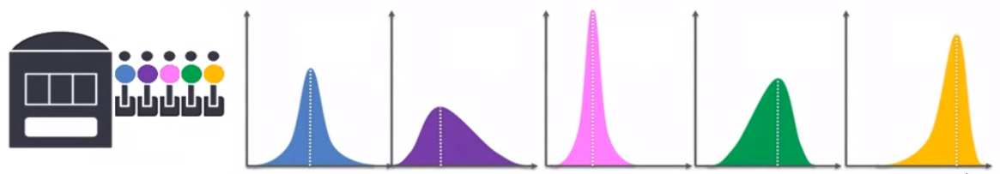

MULTI-ARMED BANDIT SETUP
Odalric-Ambrym Maillard
HORIBA
April 22, 2025

Roadmap
- Why bandits? Sequential decision making tasks
- Formal definition of Multi-armed Bandits
- A short history of multi-armed bandits
- Challenge:
Uncertainty Exploration -Exploitation - Performance measure: Regret minimization
- Why sampling best observed action is
unreliable - Classical Bandit algorithms
Multi-armed bandit framework
Model \(\mdp=(\mathcal{A},{\bf r})\) where \(\cA=\{1,\dots,5\}\), \({\bf r}:\cA\to\cP([0,1])\).
Unknown distributions

At each decision time \(t\in\Nat\)
- agent
chooses \(a_t\in\cA\) - then
receives sample (reward) \(r_t\sim {\bf r}(a_t)\)
producing history of interactions \((a_1,r_1,\dots,a_{t-1},r_{t-1})\).
A learner produces an adaptive policy: \({ \pi}=(\pi_t)_t\) s.t. \(a_t\sim \pi_t\)
Typical goal is to accumulate rewards over time: \(\Esp\left[\sum\limits_{t=1}^T r_t\right]\)
Multi-armed bandit examples
Clinical trials:
Agroecological trials:
Multi-armed bandit: uncertainty
Aleatoric Uncertainty
Regret performance criterion
Denote the
\({\bf m}_\star = \max\limits_{a\in\cA} \,{\bf m}(a)\) and
\(\cO(\mdp)= \Argmax\limits_{a\in\cA} \,{\bf m}(a)\)
The
\(\kR_T({ \pi},\mdp)=\Esp_{\star}\bigg[\sum\limits_{t=1}^Tr_t\bigg]- \Esp_{ \pi}\bigg[\sum\limits_{t=1}^Tr_t\bigg] \)
where \({ \star}=(\star_t)_t\) denotes stationary optimal policy s.t. \(\forall t,\, \star_t\in\cO(\mdp)\).
A short history of Multi-armed bandits
- 1933: Bayesian strategy: Thompson sampling
- 1952: H. Robbins
- 1985: T.L Lai
- 2002: Optimistic strategy: Upper Confidence Bound (UCB)
- 2010-2025: Optimality of KL-UCB, TS, IMED, SDA, etc.
- 2010-2025: Extensions to contextual, linear, structured arms.
Uncertainty and optimization
Two strategies: blue or red.Uncertainty and optimization
For action \(a\in\{\pi_1,\pi_2\}\), empirical mean \(\hat{m}_t(a)\) different from true mean \(\textbf{m}(a)\).
The Exploration-Exploitation Dilemma
⇒ the learner should avoid mistakes by pulling
⇒ the learner should gain information by repeatedly pulling
Challenge: The learner should balance two conflicting objectives!
Pure Exploitation is risky
It is tempting to always pull \(\Argmax\limits_{a\in\cA}\,\hat{m}_t(a)\)
Histogram of cumulative regrets over 200 runs each with horizon \(T = 1000\)
Balancing exploration and exploitation
The UCB strategy pulls \(\Argmax\limits_{a\in\cA}\,m_t^+(a)\) instead, where \(m_t^+(a)\geq \textbf{m}(a)\) w.h.p.
Histogram of cumulative regrets over 200 runs each with horizon \(T = 1000\)
Confidence bounds
For \(n\) i.i.d. random variables \(X_i\in[0,1]\) with mean \(m\)
\(\Pr\left( |\frac{1}{n}\sum_{i=1}^n X_i - m| \geq \sqrt{\frac{\ln(2/\delta)}{2n}}\right) \leq \delta\,.\)
\(m_a = \hat m_{t,a} + (m_a-\hat m_{t,a}) =\)